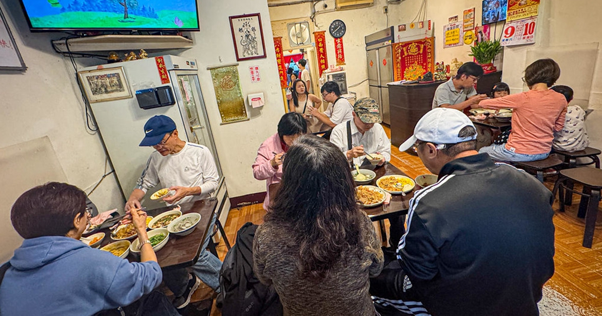

Blake｜阿仁炒飯：大龍峒保安宮巷弄內，圓山站人氣炒飯與熱炒備忘
來源是布雷克的出走旅行視界 2026-07-31 食記〈阿仁炒飯｜超過2000則評價隱藏在大龍峒巷弄內的台北最強炒飯〉。這篇適合收進「生活雷達／台北美食／大龍峒」：重點是圓山站、保安宮、孔廟一帶散步時，可搭配的一間人氣炒飯/熱炒小店。

一句話摘要
阿仁炒飯位於台北市大同區哈密街 45 巷 2-4 號，靠近大龍峒保安宮與捷運圓山站。布雷克的重點評價是：炒飯粒粒分明但帶微濕潤感、鑊氣足、尖峰時段排隊與併桌是常態；適合想吃大龍峒巷弄炒飯、熱炒、炒麵與湯品的人，但若趕時間要先電話預訂。
店家資訊
- 店名：阿仁炒飯
- 地址：台北市大同區哈密街 45 巷 2-4 號
- 交通：捷運圓山站 2 號出口步行約 7 分鐘；可搭配保安宮、孔廟、大龍峒街區
- 電話：02-2598-6747
- Blake 文中營業時間：11:00–14:30、17:00–20:30，週日與週一公休
- 類型：炒飯、炒麵、湯麵、湯品、熱炒
文章重點整理
布雷克形容阿仁炒飯是大龍峒保安宮旁巷弄內的人氣店，Google 地圖上有超過 2000 則評論。即使平日中午或假日下午一點半仍可能客滿，內用流程通常要先抽號碼牌，等叫號再入座，且可能需要併桌。
菜單以炒飯、炒麵、湯麵為主，也有湯類與熱炒。文中提到最貴炒飯約 130 元，熱炒菜多落在 150–180 元；全部現點現炒，因此用餐時間需要等待。店內冰箱有辣高麗菜泡菜，可搭配炒飯增加辣感與酸香。
必點方向
- 什錦招牌炒飯：肉絲、蝦仁、臘肉、火腿等配料都加；適合第一次想吃招牌組合的人。
- 蝦仁炒飯：布雷克評價米飯有鑊氣、醬油香均勻，蝦仁脆口；搭配免費泡菜更有層次。
- 沙茶炒牛肉：牛肉大片且嫩，沙茶與黑胡椒香氣明顯，可單點配白飯。
- 海鮮炒烏龍麵：烏龍麵吸附醬汁，份量感足。
- 豆腐鮮蚵湯：清甜湯底，鮮蚵份量不錯。
- 炒青菜：價格友善，火候與蒜香是加分項。
圖片描述
主圖不是炒飯特寫，而是店內用餐環境：空間不大，多桌客人正在用餐，桌上可見炒飯、湯品與小菜，呈現尖峰時段客滿、可能併桌的氛圍。這張圖適合佐證「人氣與店內用餐節奏」，不是餐點細節圖。
布雷克文章另有多張 Flickr 餐點照片，本文已本地保存部分作為補圖；由於未逐張在公開頁展示，僅作 source archive 圖像備份。
來源與查核
布雷克原文列出地址、交通、電話與營業時間。Brave Search 交叉比對到 Darren 蘋果樹、莉芙小姐、神農太太等食記，也都把阿仁炒飯定位在台北市大同區哈密街 45 巷 2-4 號、大龍峒/保安宮一帶，電話 02-2598-6747；營業時間多落在午餐與晚餐兩段，常見公休日為週日、週一。
Google 評論數、評分、價格與營業時間會變動，出發前仍建議用 Google Maps 或電話確認。若趕時間，依布雷克建議可先電話預訂。
收進生活雷達的理由
大龍峒、保安宮、孔廟、圓山站一帶很適合作半日散步；這篇補上一個「想吃熱炒/炒飯，不只是早餐或甜點」的餐點錨點。適合安排在孔廟、保安宮、花博公園動線中，作為午餐或晚餐選項。